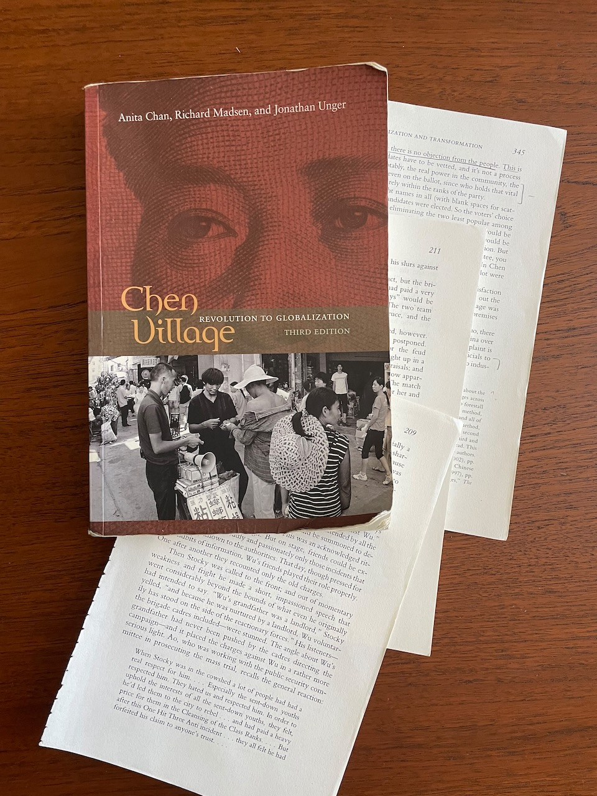

Book Review — Chen Village: Revolution to Globalization (Third Edition) by Anita Chan, Richard Madsen, and Jonathan Unger
Wednesday 19, July 2023
Many years ago I was an overly ambitious college freshman and decided to take a sociology class on contemporary Chinese society to max out my credits. It was a 3 hour weekly lecture that met late in the day and had the most readings of any class I would take for the rest of my time at school. I had several other demanding classes at the time, so I breezed through some of the readings in order to stay sane (although I was more attentive to the readings I did for this class than the French readings I would do while walking to lecture). All said, Chen Village was one of the selections that really stuck out to me from such a chaotic time in my life, and although I definitely didn’t glean as much out of it as I should have the first time, it remained in my memory as a decidedly good read. Thankfully I have more leisure time these days, and gave the book a seconds pass at a less break-neck speed and I cannot laud praises enough for just how great it is.
The book is the result of a multi-decade study on a village in the Pearl River Delta region in the southern coastal area of China. It follows the lives of the villagers and local leadership from the early 1960s through 2007, providing a microscopic view on the effects of the rise of Mao Zedong and communism in China, his campaigns, the aftermath of his death, the radical transformation ushered by Deng Xiaoping, and the rapid globalization that swept across coastal China. In a moment of clairvoyance the authors decided to start recording interviews with expats who had fled mainland China to Hong Kong in the 1970s. They eventually were able to visit the village for day trips when the country started opening up to foreigners again, and then multi day visits as restrictions further eased. The study, as a whole, is really quite an amazing undertaking and it started from just a few chance encounters!
Chen Village is certainly not indicative of all rural villages in China, it’s proximity to Hong Kong positioned it for rapid urban development following the rise of Deng Xiaoping, but provided a very real slice-of-life from such a tumultuous time. It featured both the existing peasantry from the town, the “sent-down youth” from a nearby city that were encouraged to join these rural communities, and, near the end, a section on the migrant workers working in the factories. A note of interest: current Party Secretary, Xi Jinping, was a sent-down youth himself, and the book helps to contextualize his rise to power.
I cannot express how well written the book is. While based on interviews and telling the story of a real village, you still get a sense of familiarity with the people as if they were characters in a fiction book. There were several times when I needed to remind myself that this was, in fact, the result of a sociology study. My only complaint is that the glue binding in the book itself did not survive the Texas heat — the book is a tattered mess of loose pages now. I look forward to reading it again, maybe with a new copy :)
